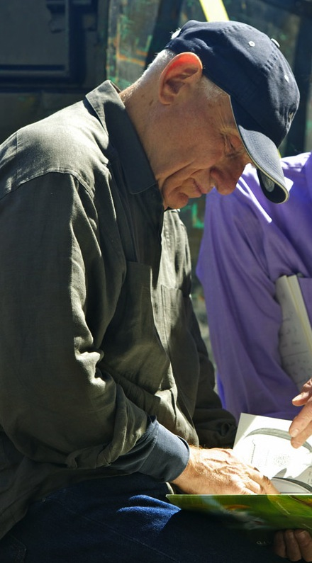

Rich Links
DRAFT
Edward Tufte, Adam Schwartz

Chopin
Berceuse, Opus 57, lullaby
Children
Collaborated with Cohen on questionable stock trades
Confirmed
collaborated with Cohen on questionable stock trades
Indicted for alleged insider trading with Cohen